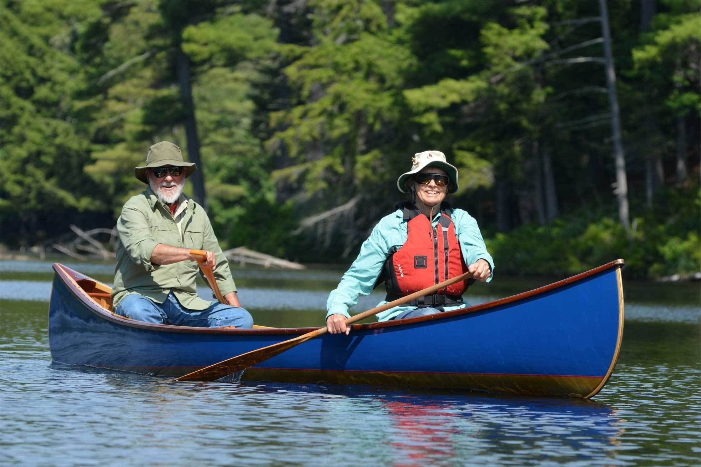

chapter12.2--handout
Background Information
Fly fishing 飞蝇钓法
"I'm going to fish a fly. You got any McGintys?"（“我要用假蝇钩钓。你有没有麦金蒂蝇钩？”）
fish a fly可不是指“钓飞蝇”哦~ McGintys指的也是一款经典的假蝇钓钩，而后面提到的fly-book则是装蝇钩的盒子，通常形状像一本书而得名（"Well, I'll take the fly-book, then." He tied on a fly.）
这里的方法和工具其实都属于钓鱼当中的一种技法——飞蝇钓法（Fish flying）. 它是用仿生饵模仿飞蝇、蚊虫、蜻蜓等有翅昆虫落水，从而刺激水体中凶猛掠食性鱼类（比如Jake和Bill要钓的鳟鱼——“trout”就属于这类，其他还包括三文鱼“salmon”等）。

假蝇钩（artificial flies）一般通过将禽或兽的毛发、羽毛或者其他材料，包括自然的和合成的（natural and synthetic）绑在鱼钩上制成。并且这些蝇钩还会依据各地水生昆虫或饵鱼的种类不同而在大小、色彩以及形态上作出变化（flies are tied in sizes, colors and patterns to match local terrestrial and aquatic insects, baitfish）.
采用飞蝇钓的季节一般是每年春夏之交（3~4月），这时候有翅类的浮游动物正好羽化成虫，而掠食性鱼类的捕食习惯则是凭直觉捕食以及食物入口再辨别吞咽，所以这种高超的“障眼法”才得以发挥作用。在一天当中，最佳的时期则是清晨和黄昏，此时掠食性鱼类多在近岸的水体上层成群游弋，捕食漂浮的落水昆虫和在水面产卵的蚊子。
另一个要注意的是，飞蝇钓需要保持钓点安静，掠食性鱼类胆小怕人，对声音反应极为敏感，转换钓点时脚步要轻，并尽量利用地形地物隐蔽自己，更不要穿着颜色鲜艳的服装。此外，甩竿的幅度还不能太大，尽量不要使钓竿的影子在钓点上掠过以免惊扰鱼群。
这种钓法灵活自由，抛用控线等对钓鱼者的要求很高；而且它所用的配备通常别的钓具也无法代替，报价不菲，被称为钓中贵族或钓中高尔夫。
Vocabulary
spot
vi. 布满，遍及（to place here and there）
原文：In the flat pool beside the stream tadpoles spotted the sand.
小溪边有个潜水塘，塘底沙地星星点点地分布着小蝌蚪。
💧spot 表示“布满”的时候尤指“四处零散地分布”，和dot的用法类似，比如：The sailboats dotted/spotted the lake.
湖面上星星点点布满了帆船。
bulk
vi. 显得庞大；形成大块（to stick out or up; to increase in size）
原文：Their roots bulked above the ground and the branches were twisted.
（山毛榉树的）根在地面上块头粗壮，树上的枝桠也盘错虬结着。
💧bulk 在这里表示“膨胀、突起（成为块状）”；另外bulk large还可以延伸为抽象意义上的“变得重要，凸显”（to be of great importance）, 比如：The problem bulks large in his mind.
这个问题在他脑海里占据了重要地位。
Crush Your Problems
1、The log was surfaced off, and there was a sapling bent across for a rail.
这根圆木的上面是刨平的，一棵小树的树干被弄弯了插在两岸，当作栏杆。
💧表达精讲
①was surfaced off 在这里的意思是with the suface (the top layer of the log) taken off “把表面刨去了”；
②a sapling bent across for a rail 也就是把小树折弯后（bent）两端分别插在小溪的两岸（across），当作栏杆或扶手（for a rail）；和rail类似的还有handrail（比如电梯的扶手、楼梯的栏杆）以及guardrail（桥和悬崖等的护栏）等。
2、Bill put the pack against one of the trees and we jointed up the rods, put on the reels, tied on leaders, and got ready to fish.
比尔把背包靠在一根树干上，我们接上一节节钓竿，装上卷轴，绑上引线，准备钓鱼。
💧表达精讲
①joint up 在这里指把钓竿一节套一节地接上（不像现在的钓竿可以直接伸缩）；joint作名词可以表示“（身体的）关节”，比如out of joint就有“脱臼”的意思，另外joint还可以指“（两个物体之间的）接缝”（a place where two things or parts of an object are joined together）.
②tie on leaders “绑上引线”，tie on表示“绑上，系上”，比如tie on a ribbon（系上丝带）；leader是指钓竿上把主线和鱼钩连在一起的引线（a short length of fishing line between the main line and the hook）.
3、It was built to provide a head of water for driving logs.
修筑水坝是为了造成水流的落差，好用来运送原木。
💧表达精讲
head 在这里的用法可能大家都不太熟悉，它是指“（液体）在两点之间的高度差”（The difference in depth of a liquid at two given points）. 这里指用水坝来形成落差（通过闸门的开关来改变水位），这样原木就能顺势而下了。
4、The gate was up, and I sat on one of the squared timbers and watched the smooth apron of water before the river tumbled into the falls.
水闸关着，我坐在一根刨成方形的木材上，注视着坝内尚未形成瀑布的那潭平静的河水。
💧表达精讲
①the smooth apron of water 是指“水面光滑平整”，apron有很多意思，比如“停机坪”（landing field）、“舞台幕前的平地”（forestage）等，但基本的含义都是指“平面”（a flat surface）, 所以the apron of water形容的就是水面丝毫没有涟漪（注意the...of sth是我们之前介绍过的一个比喻结构哦~）
②tumble into “（水）奔流形成”，tumble本身有“跌倒、滚落”的意思，这里指水“”快速流动（to flow quickly）, 比如：A narrow stream tumbled over the rocks.（一条狭窄的小溪在岩石间奔流。）
5、I did not feel the first trout strike.
第一条鳟鱼咬钩时我都没觉出来。
💧表达精讲
strike 在这里指“鱼咬住钓饵”（the taking of bait by a fish）这个动作（比如会感觉到鱼线轻轻一动）。
💧知识拓展
有一种工具是专门用来提示钓鱼者鱼讯的（和“鱼漂类似”），就叫fish strike alarm. 以前采用的是“鱼铃铛”，但由于灵敏度不够，容易受到风的影响产生误报警，声音太小，无发光指示而不利于夜钓等，所以后来又研发了新型的电子报警器，这样在垂钓的时候就不必苦于要目不转睛地盯着竿稍了。
6、When I started to pull up I felt that I had one and brought him, fighting and bending the rod almost double, out of the boiling water at the foot of the falls, and swung him up and onto the dam.
当我正要动手收钓丝的时候，才感到已经钓住一条了，我把鱼从瀑布脚下翻腾的水里拉出来，它挣扎着，几乎要把钓竿折成两半，我把它呼的提起来放在水坝上。
💧表达精讲
①fighting and bending the rod almost double 是一个现在分词结构，主语是him（也就是这条鳟鱼）；bend sth double 表示“使某物弯得很厉害，几乎快要折断了”，比如：The trees were almost bent double in the wind.（这些树都快被风吹折了。）
②the boiling water 是指“翻腾的水”而不是“烧得翻滚的水”哦~ boil在这里表示“翻滚着（激起浪花）”，比如：The river boils over the rocks.（小河在岩石间奔腾翻滚。）
由此boil还可以引申为“情绪激动（欣喜或愤怒）”（to be stirred up or greatly excited, especially in anger）. 比如：Lewis was boiling with rage and misery.（刘易斯恼羞成怒。）
Content Analysis
我们曾经简略地介绍过，海明威本人对自然的热爱以及受自然影响之深从童年时期就已经开始了，他会缠着父亲带自己到森林里露营以及打猎钓鱼等，所以他的作品几乎也都没有逃过人与自然这个主题的，比如他的短篇《大双心河》（我们在第三本书中会读到哦~）以及在更为成熟的中篇《老人与海》里也可以算是把这个主题提炼到哲学思考的层次了。
今天的内容则是Jake和Bill经过长途跋涉后来到法布里卡河谷钓鱼（the valley of the Rio de la Fabrica）. 作者对沿途的自然环境以及Jake钓鱼的全程都进行了细致的描绘。在海明威看来，自然既是狩猎钓鱼的场所，也是一个身心休憩疗愈的地方。比如Jake和Bill钓鱼中的各自较劲也被衬托在非常和谐愉悦的氛围中——
💧Clue 1: The competition between Jake and Bill is a pleasant one.
Evidence 1: "You going to fish bait?"
"Yeah. I'm going to fish the dam here."
"Well, I'll take the fly-book, then." He tied on a fly. "Where'd I better go? Up or down?"
"Down is the best. They're plenty up above, too."
Bill went down the bank.
“你要用鱼饵来钓吗？”
“对，我就在水坝这钓。”
“那我就把蝇钩盒拿走了。”他系上一只蝇钩。“我到哪儿去好？去上边还是下边？”
“下边最好。不过上边的鱼也很多。”
比尔顺着河边向下边走去。
Jake和Bill并没有公开宣称要一较高下，但从两人分别选择了不同的垂钓地点以及方式就已经透露出“较量”的意味了。并且这种竞争在静谧宜人的环境烘托下，丝毫没有争锋的紧张感，而是愉悦并且友好的（pleasant and amicable）.
另一个值得留意的细节是Jake和自然独处时的自得和充实——
💧Clue 2:Jake is content with being alone.
Evidence 1:Before I could finish baiting, another trout jumped at the falls, making the same lovely arc and disappearing into the water that was thundering down.
我还没有来得及挂好鱼饵，又有一条鳟鱼向瀑布蹿去，在空中画出一条同样美丽的弧线，消失在轰隆隆地奔泻而下的水流中。
Evidence 2:It was very hot on the dam, so I put my worm-can in the shade with the bag, and got a book out of the pack and settled down under the tree to read until Bill should come up for lunch.
坝上非常热，所以我把装蚯蚓的铁罐同猎物袋一起放在背阴的地方，从背包里拿出一本书，安坐在树下看起来，等比尔上来吃中饭。
在钓鱼的过程中，Jake也没有停止欣赏一切和自然有关的美妙之处，比如鳟鱼跃起时的弧线（the same lovely arc）. 在把战利品细心地放置好后（用蕨类植物铺了三层，中间分别放上三条鳟鱼），Jake还颇有兴致地拿起书来读，尽管天气很炎热也没有一点焦躁和厌烦。Jake在这里的表现和我们在前面的内容里看到的有很大的不同（似乎更为自得并且乐于享受生活的平淡），这也是海明威想展现的自然的“治愈”作用（the therapeutic value of nature）.
Today's Bonus
💧除了徒步，还有哪些新鲜有趣的户外运动？
当Jake指给Bill看他们要如何翻山越岭才能到伊拉蒂河谷的时候（"We have to follow this road along the ridge, cross these hills, go through the woods on the far hills, and come down to the Irati valley," I pointed out to Bill.）Bill感觉非常绝望，因为这一段徒步实在非常累人（"That's a hell of a hike."）
hike 在这里指“〔在山区或乡间的〕的徒步旅行，远足”。随着时代的发展，“徒步”（hiking）已经开始成为一种流行的户外运动，它和散步以及竞走都不同，而是有目的地地在郊区、农村或者山野间进行中长距离的走路锻炼。
除了徒步，还有不少既有趣又有挑战性的户外运动，比如以下↓
1. Hash House Harriers (HHH or H3) 猎狗追兔子
Hash 作为一种跑步健身的游戏正在悄然兴起。它起源于1938年马来西亚的吉隆坡，全称是“Hash House Harriers”（翻译成中文就是猎狗追兔子）。在Hash中最重要的一件事就是跑步，而且是有趣味、有难度的跑步。
规则是这样的：由一人扮演“兔子”（the hare），事先在野外设置好错综复杂的路线，而一群自称为“猎狗”（harriers）的参加者则追踪而至，边跑边大喊口令，全然不顾旁人惊讶的眼神，顶着烈日骄阳或淋着瓢泼大雨，寻找兔子留下的蛛丝马迹，直至逮住兔子为止。
Hash的另一个主题则是“啤酒”，当“猎狗”们到达终点时，还可以尽情畅饮啤酒（其中最受欢迎的是“姜汁啤酒，Ginger beer”）.
2. Kayak and canoe 皮划艇
皮划艇作为奥运比赛的项目之一为大家所熟知：在1924年，它作为表演项目进入奥运会，1936年，皮划艇成为奥运会正式比赛项目。它具体又分为皮艇（kayak）和划艇（canoe）.
两种各有不同的历史：皮艇起源于格陵兰岛上的爱斯基摩人所制作的一种小船，这种船用鲸鱼皮、水獭皮包在骨头架子上，用两端有桨叶的桨划动。
划艇则起源于加拿大，因此又称加拿大划艇。但实际上这两种艇都是从独木舟演变而来的。

皮划艇在国外其实相当普及，其原因包括经济投入和技术门槛都相对低、功能多适应性强，既可以做竞技使用，也适合家庭休闲。
一般在静水（flatwater）中进行的适合休闲、水面长途旅行、游戏娱乐、竞技竞速等；而如果是在急流（whitewater）中则主要是漂流。当然也有人用皮划艇在海上冲浪，但这个对个人的技术要求比较高。
3. Treetop adventures 树上探险
树上探险活动起源于欧洲，渐渐成为一种引领户外休闲的领袖活动。它通过在树上设置不同的关卡，关卡的难易程度不同，风格各异，刺激强度不等使人们在参与树上探险的时候形成不同的心灵体验。同时又能拥抱绿色、回归自然。
树上探险活动虽然在某些项目上也需要参与者的体力支持，但是它绝非一种简单的体能测试，迥异于普通的拓展训练等。它是一种激发参与者挑战自我雄心、提高自信心并且享受在心灵深处认识自己的娱乐休闲活动。
这种运动从低至10岁的未成年人，高至65岁的高龄族都可参与。这就是树上探险。只要身高在1.4米以上，体重在130公斤以下，身体健康的人都可以到树上去一显身手。